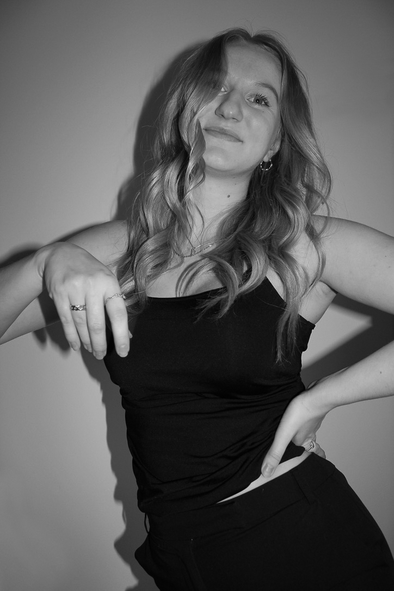

Hvem er jeg?
Jeg kommer fra en lille by nær Hillerød, hvor jeg er vokset op, men er i øjeblikket bosat på Østerbro. Jeg har igennem hele mit liv været glad for at være kreativ, og har altid vidst det er det jeg ville. Som multimediedesigner har jeg mulighed for at være kreativ på en ny og digital måde, hvor jeg kan udforske den digitale verden og følge med på de nyeste trends.
Mine kompetencer
Gennem min multimedie uddannelse har jeg lært, at arbejde både selvstændigt og i samarbejde, med enten andre studerende eller virksomheder. Dermed har jeg kunne fordybe mig i et emne eller projekt, hvor jeg har haft mulighed for at skabe min egen viden og erfaring indenfor design og kode. Derudover har det givet mig kompetencer i at sætte mig ind i en vision og skabe et univers tilpasset til kunden eller projektet.
Erfaring
Kode:
HTML, CSS, Javascript
Adobe CC:
Illustrator, XD, Premiere Pro, Photoshop, Lightroom, Audition
Projektstyring:
GitHub, SCRUM
CMS:
WordPress
Se mit CV her